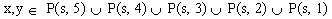
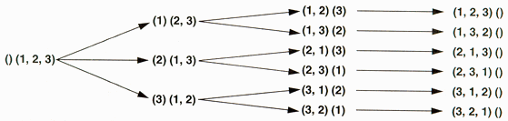

| Requirements |
|
Just Perl |
My nephew asked for help with a homework problem he was given for extra credit. He was given a set of digits s, an integer n, and was asked to come up with two numbers x and y such that the difference between x and y is as close as possible to n. Each x and y must be composed of digits in s with no repetitions.
In mathematical parlance, here's what his particular problem looked like.
| s | = (9, 2, 3, 8, 6) |
| n | = 5029 |
| minimize: | | x - y - n | |
| where: |  |
The last statement is just a funny way of saying that x and y have to be composed of digits from s. For example, if you chose x = 9268 and y = 268, you get:
9268 – 268 = 9000
leaving a remainder of
9000 – 5029 = 3971.
After convincing myself that a brute force search was necessary, I decided that this was a nice opportunity to explain what permutations are and how handy a computer can be at solving problems like this, at least when the number of permutations is small.
We started out by counting the possibilities for choosing the numbers x and y.
5 digits: 5 * 4 * 3 * 2 * 1 = 120 4 digits: 5 * 4 * 3 * 2 = 120 3 digits: 5 * 4 * 3 = 60 2 digits: 5 * 4 = 20 1 digit: 5 = 5
In order to try all possible cases, a program would need to perform 325 * 325 = 105625 different subtractions. Not too bad; it's reasonable to expect a program to be able to try each and every case.
Now it's time to write a program to actually try all the cases. This is tricker than it looks at first unless you are willing to write 5 * 5 different subroutines for each of the cases above. I wanted a general solution where I could just plug in the set s and the number n, and let it do all the rest. What we need in order to be able to try the subtraction on all these permutations is a good iterator
Programmers use iterators to provide a way to access every element of a set in a particular sequence. For example, if you had a set of different colors, you might want to access each one ordered by its hue. If you had a set of jazz albums, you might want to access each one ordered by artist and recording date. Most of the time, there is a nice well-ordered set to iterate over and doing so is commonplace enough we don't even think about it anymore. If you want to print the integers between 1 and 10, you might do it like this:
for ($val=0; $val<10; $val++) {
print($val + 1, "\n");
}
How about if you wanted to print the lower case letters between 'a' and 'z'? You might do it a slightly different way:
$val = 'a';
while ($val ne 'z') {
print $val, "\n";
$val++;
}
print $val, "\n";
Instead of iterating by explicitly adding 1 to each element to set the next element, let's generalize a bit and iterate by making a function call. One way to do this is to introduce a state variable that you pass to and from the iterating function, but is otherwise ignored by the code calling the function. The iterator will then use this state variable to generate the successor to any given state.
Here is an example that iterates over the lower case letters just like the previous example. In this slightly contrived example, the state variable is simply the ASCII value of the letter we're interested in:
sub alpha_init {
my ($state) = shift;
return(ord($state));
}
sub next_alpha {
my ($state) = shift;
my ($val);
if ($state >= ord('a') and $state < ord('z')) {
$state++;
} else { $state = 0; }
$val = chr($state);
return($state, $val);
}
sub main {
my ($state, $val);
$val = 'a';
$state = &alpha_init($val);
while ($state != 0) {
print $val, "\n";
($state, $val) = &next_alpha($state);
}
}
&main
Why should we go through so much trouble? Because it's not always easy to determine the next state. Or our state variable might be so complex that there's no easier way to iterate.
Now that we know we want to use an iterator to try all the possible combinations, what will our code look like? It looks much the same as the previous example:
sub main {
my ($s, $n);
my ($state1, $state2, $val1, $val2);
my ($tmp, $diff, $len, $bestleft, $bestright, $bestdiff);
$s = [9, 2, 3, 8, 6];
$n = 5029;
$state1 = &permute_init($s);
($state1, $val1) = &permute_next($state1);
while (defined($val1)) {
$state2 = &permute_init($s);
($state2, $val2) = &permute_next($state2);
while (defined($val2)){
# do computation involving $val1, $val2, and $n
($state2, $val2) = &permute_next($state2);
}
($state1, $val1) = &permute_next($state1);
}
}
&main
It's time to get our hands dirty and define &permute_init() and &permute_next(). Let's look at a simple example of what we are after in some detail. Assume we have s = (1, 2, 3). Our goal is to obtain a representation such that given our current state, we can return the appropriate value and generate the next state.

Figure 1: Divide and conquer: Finding permutations of three by finding permutations of two, and finding permutations of two by finding permutations of one.
When faced with a large problem, it is often useful to divide and conquer, reducing the problem to a smaller version of itself over and over again, until you're left with a trivial problem that is easily solved.
In our case, we start with trying to figure out the permutations of a set of three numbers. It would be nice if we could perform a step that pulls out one of those numbers and leaves us with the smaller problem of finding out the permutations of a set of two numbers. If we can do that once more, we're left with a trivial problem: finding the permutation of one number.
One way we can do the breakdown from a set of three to a set of two is to pull out each number in turn, keeping track of the number we pulled out.
That would look like the Figure 1 shown above.
Our Perl implementation will keep the state variable as an array of items, each of which is a reference to two arrays, which I call left and right. The left array keeps track of the things we pulled from the right array. The initial state is:
[ [], [1, 2, 3] ]
The procedure: we pop an item, check to see if the right array still has digits, and if it does, replace the item with all the successor states that can be generated from this state. A successor state is generated by going through each digit on the right, pulling it out and tacking it on the end of the digits on the left. So in this case, there will be three successor states that replace this state.
If we wanted our iterator to return only combinations of three digits, our &permute_next() function would keep pulling items and replacing them with successor items until it ran across an item where the right side was empty. Then our left side would represent a combination of three and that would be returned.
However, in our case, we wanted not only combinations of three but also combinations of two and combinations of one. Looking at our state tree, we see that this can be done simply by returning what ends up on the left side--provided it isn't empty.
The iterator returns undef when it has finished iterating.
Note that since we only pull off states one at a time, but add them many at a time, the state variable can get pretty large.
Listing 1: perm.pl.
When it comes time to pull a state off of the list to replace it with its successors, we can either pull the newest state or the oldest state. Which one we choose determines whether we're performing a breadth-first or depth-first search. When we're searching the entire state space - that is, an exhaustive search, it doesn't much matter which we use - unless doing it one way keeps the list smaller and conserves significant memory.
Doing this whole exercise in Perl is a joy because with anonymous arrays, we don't have to worry about memory management, and Perl's builtin functions let you treat the array as either a FIFO (first-in-first-out) or LIFO (last-in-first-out) data structure.
Oh, in case you were actually interested in the answer, here is what the program came up with:
% perl perm.pl 105625 different possibilities were tested. There are 4 answers that are off by 1 8926 - 3896 = 5030 8296 - 3268 = 5028 8326 - 3298 = 5028 8326 - 3296 = 5030
__END__